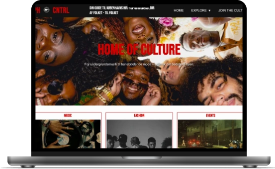
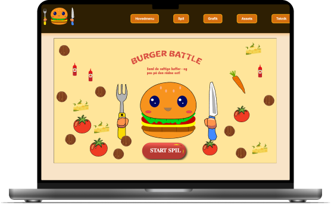
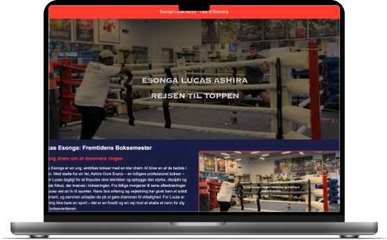

1. SEMESTER PÅ KEA
Velkommen! Jeg er glad for, at du fandt din vej til mit portfolio! Her finder du de forskellige projekter, jeg har arbejdet på, på mit første semester på Multimediedesigner-uddannelsen.
Process at arbejde i på MMD

01. Research

02. Idegenerering & Prototype

03. Code & Finpuds
TEMA 2: Grundlæggende Web
TEMA 3: Grundlæggende UX/UI
TEMA 4: Animation
TEMA 5: Indhold